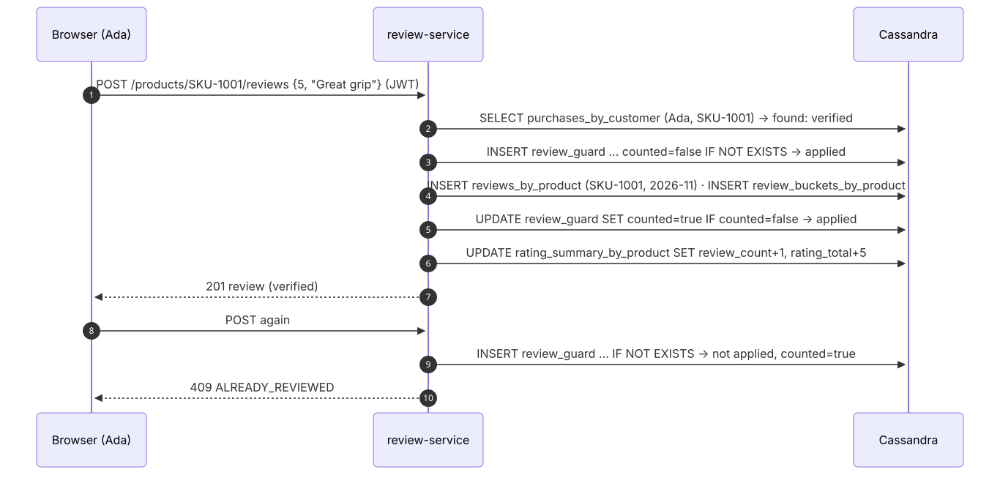
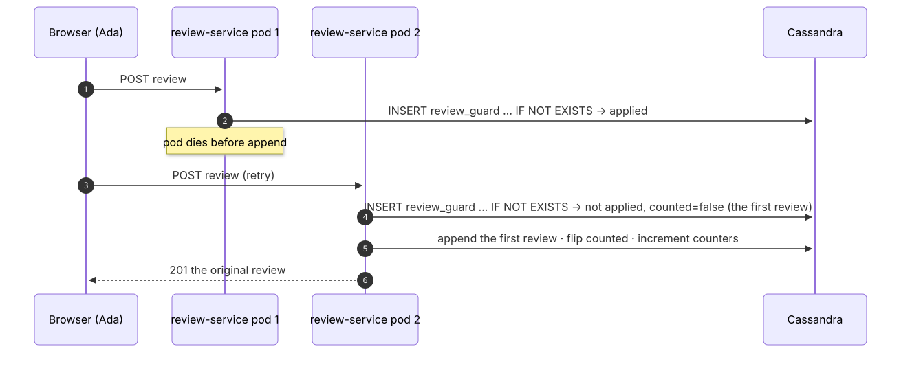

review-service: low-level design#
Part of the e-commerce system design. Animated version: walkthrough.
1. Responsibilities#
| Does | Does not |
|---|---|
| Store reviews and show them newest first, with a rating summary | Moderate text (a future moderation step would sit before append) |
| Allow one review per customer per product | Check that the SKU exists (the gateway only links reviews from product pages) |
| Mark reviews as verified purchases | Call order-service: purchases arrive as events |
2. Guarantees#
| Guarantee | How |
|---|---|
| One review per customer per product | INSERT INTO review_guard … IF NOT EXISTS, a lightweight transaction (Paxos): of any number of concurrent attempts, one wins |
| Counters never double-count | Only the caller whose UPDATE review_guard SET counted = true IF counted = false succeeds increments the counters |
| A crash half-way is not a dead end | The guard row holds the whole review. A retry that finds an uncounted claim finishes it (append, count) and answers 201 with the original review |
| Verified means bought before reviewing | purchases_by_customer is filled from OrderConfirmed; the flag is set when the review is written |
| Bounded partitions | Reviews are partitioned by product and month; a bucket list per product lets paging continue into older months |
| Duplicate purchase events are harmless | Recording a purchase is an upsert |
The one failure that is not repaired: a crash after the flag flips and before the counter update leaves the summary one review short. That is deliberate: of the two possible errors (one too few, one too many), one too few is the safer, and it is rare.
3. Module diagram#

4. Interaction diagram#

5. Sequences#
Post a review#

A retry after a crash#

6. Data model (Cassandra)#
Schema: schema.cql, applied at start-up (every statement IF NOT EXISTS).
| Table | Partition key | Clustering | Query |
|---|---|---|---|
reviews_by_product |
(sku, bucket) |
created_at DESC, review_id DESC |
Newest reviews of a product in one month; (created_at, review_id) < (…) continues a page |
review_buckets_by_product |
sku |
bucket DESC |
Which months hold reviews, newest first |
rating_summary_by_product |
sku |
review_count, rating_total counters; average = total ÷ count |
|
purchases_by_customer |
customer_id |
sku |
Has this customer bought this product? |
review_guard |
(sku, customer_id) |
The claim: the review, and counted |
Consistency: LOCAL_QUORUM for reads and writes, LOCAL_SERIAL for lightweight transactions.
7. Scaling and performance#
- Pods: stateless, 2–10 replicas.
- Reads: a page is one or a few single-partition reads plus one counter read. Partitions stay small because of month buckets.
- Writes: two lightweight transactions per review (about four round trips each). Reviews are rare compared with reads, so this cost buys correctness cheaply.
- Hot products: a product with thousands of reviews a month still writes to one partition per month; a smaller bucket (week)
is a schema change in one place (
Review.bucketOf).
8. Failure handling#
| Failure | Behaviour |
|---|---|
| Cassandra node down (of 3) | LOCAL_QUORUM still succeeds |
| Cassandra unavailable | Requests fail with 500; the OrderConfirmed consumer retries with back-off, without skipping |
| Pod dies while posting | The retry finishes the review (see 5) |
| Kafka down when publishing ReviewPosted | Logged; the review is stored and counted. Consumers can rebuild from rating_summary_by_product |
| Unreadable order event | Sent to order.events.dlq |
9. Tests#
| Test | Kind | Proves |
|---|---|---|
ReviewTest |
domain | Rating, title and body rules; month buckets; average to one decimal |
ReviewServiceTest |
application | Second review rejected; verified only after a purchase; a crash before each step, then a retry: the review is finished once and counted at most once; paging across three month buckets, newest first |
HexagonalArchitectureTest |
ArchUnit | Layering |
ReviewContainersIT |
Cassandra + Kafka | OrderConfirmed → verified badge; 409 on the second review; summary and order; ReviewPosted on Kafka; 10 concurrent posts by one customer → exactly one review counted; cursor paging; 401 and 400 |